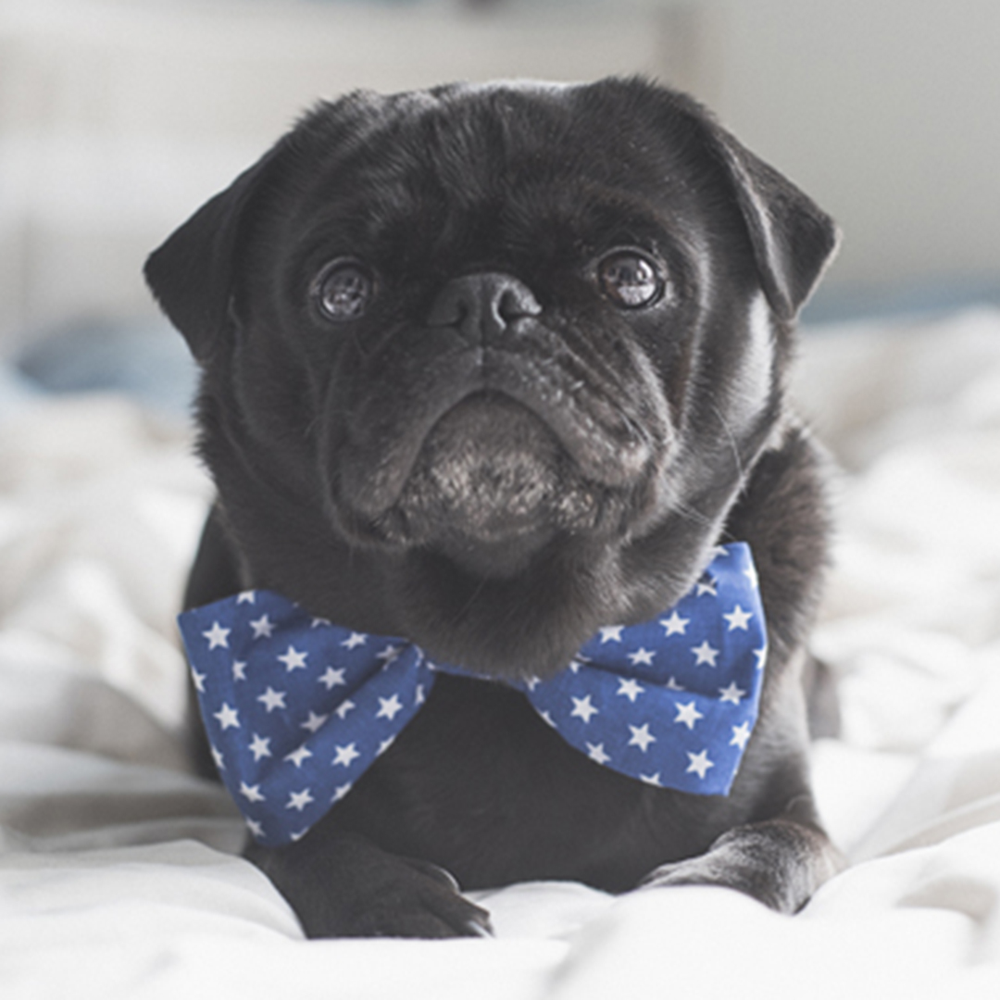

La experiencia y amor de un perro o un gato adulto rescatado puede cambiar tu vida.
Ellos merecen un hogar y una familia para compartir su vida,
conoce a nuestros amigos peludos ellos estan ansiosos de conocerte!.
Cuando una persona decide incorporar a un compañero felino en su vida,
suele plantearse a qué edad adoptarlo y si es más conveniente adoptar gatitos bebés o gatos
adultos.
Lo cierto es que ambas opciones tienen sus pros y sus contras y es recomendable tomarlas en
cuenta antes de tomar la decisión.

Cuando una persona decide incorporar a un compañero felino en su vida,
suele plantearse a qué edad adoptarlo y si es más conveniente adoptar gatitos bebés o gatos
adultos.
Lo cierto es que ambas opciones tienen sus pros y sus contras y es recomendable tomarlas en
cuenta antes de tomar la decisión.